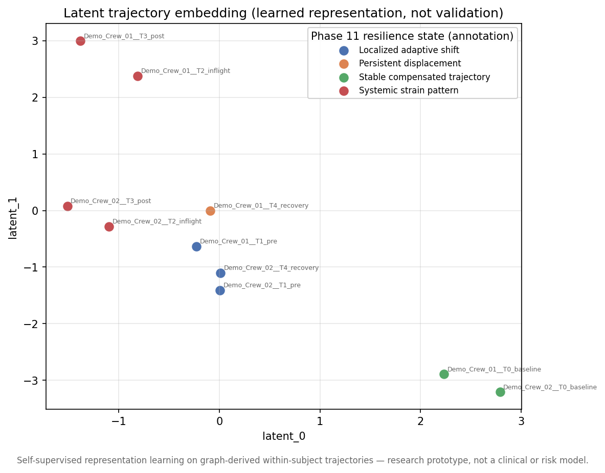
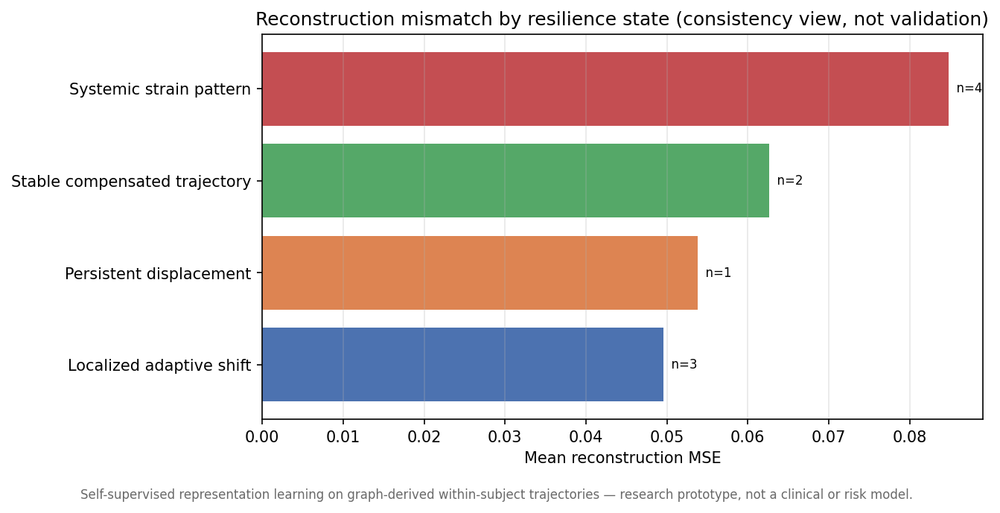
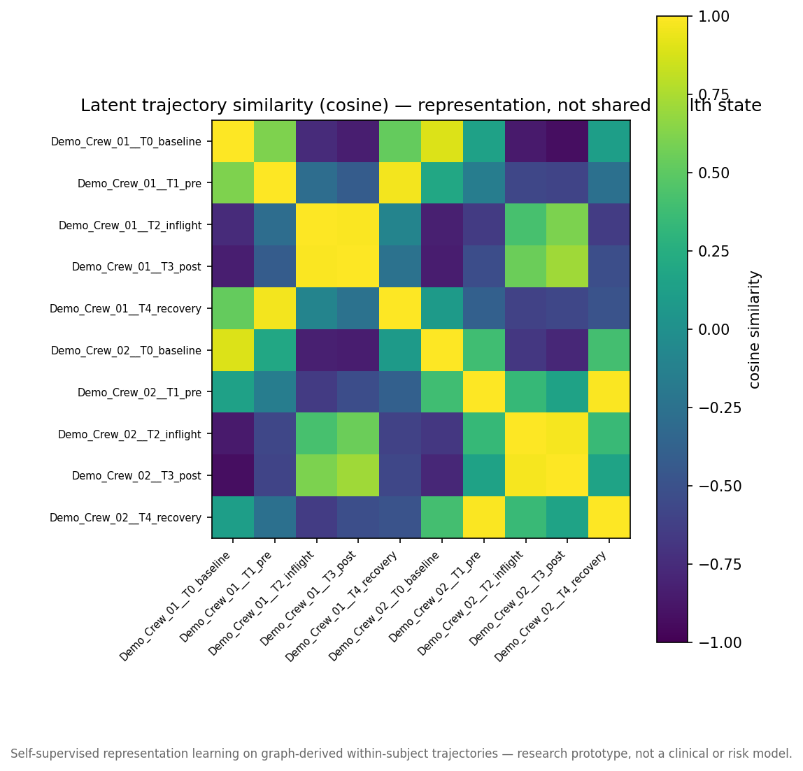

An end-to-end ML research engineering prototype connecting HRP-like longitudinal data, self-baseline biological graph trajectories, operational resilience interpretation, and PyTorch self-supervised temporal representation learning.
Small-N human spaceflight research cannot rely only on population-scale inference.
NeuroBridge-S4 focuses on within-subject longitudinal adaptation: how one organism changes relative to its own baseline over time. With only a handful of crew members, comparing individuals to a large population is inappropriate. Instead, each subject is its own reference, and the system models the shape of that subject's biological adaptation trajectory across mission phases (baseline, pre, inflight, post, recovery).
A transparent pipeline from raw HRP-like inputs to a public showcase, with a PyTorch representation-learning layer on top.
See the full diagram and component descriptions in docs/architecture.md.
Validates and standardizes heterogeneous longitudinal inputs into a graph-ready format.
Builds within-subject biological adaptation graphs and tracks change from each subject's own baseline.
Transparent arithmetic explaining which domains, subgraphs, and hazards drive each change.
Calibrates change magnitude against reference variability using robust statistics.
Rule-based, evidence-chain resilience-state interpretation for expert review.
Interactive longitudinal review of trajectories, attribution, and resilience cards.
Self-supervised latent representations of within-subject trajectory states.
This zero-install public site plus the self-contained PyTorch showcase page.
The Phase 12 showcase demonstrates a PyTorch self-supervised temporal autoencoder that learns compact latent representations of graph-derived within-subject biological trajectory patterns.



Start with this GitHub Pages site and the PyTorch showcase. No installation is required.
pip install -r requirements.txt
pytest
streamlit run app.pyOpen results/html/phase12_pytorch_showcase.html locally after
running Phase 12.